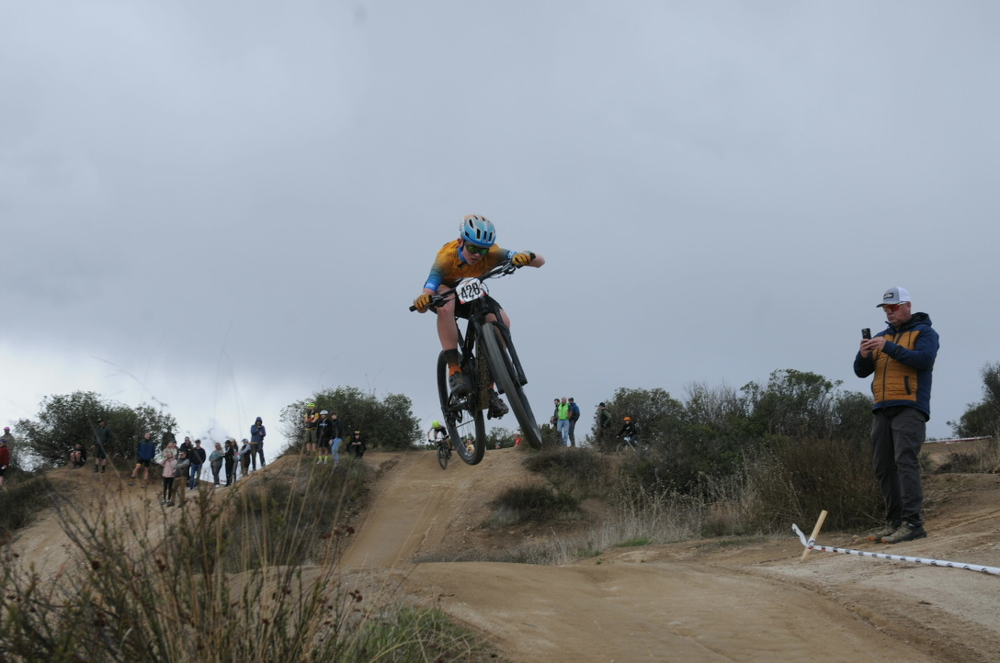
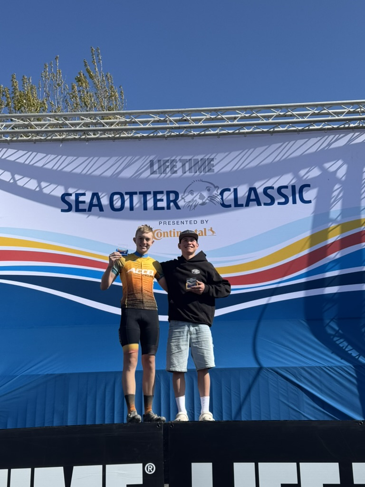
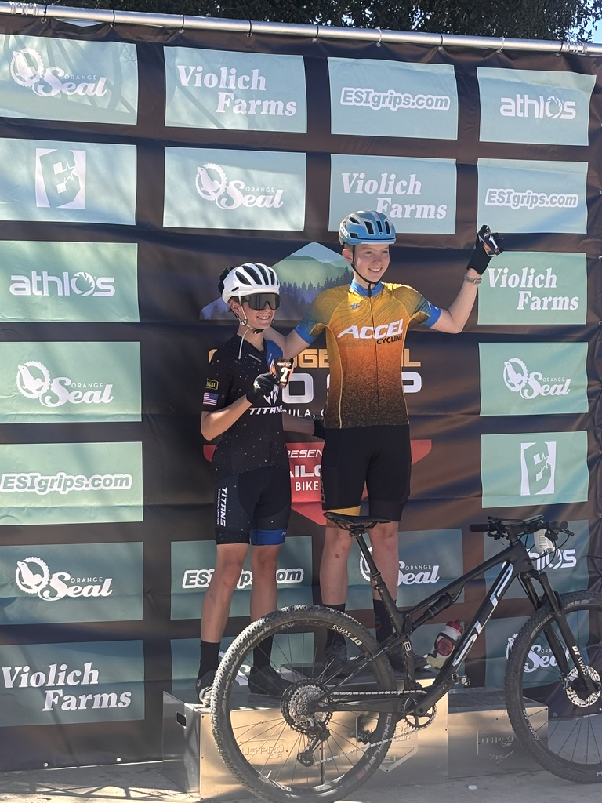
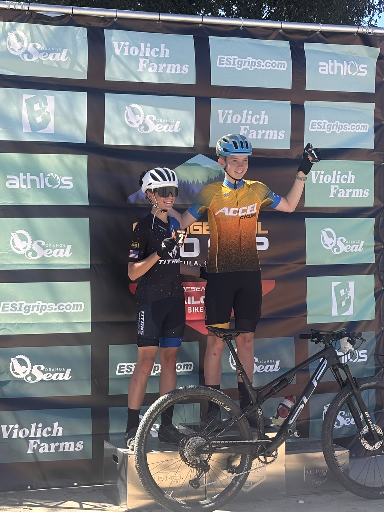
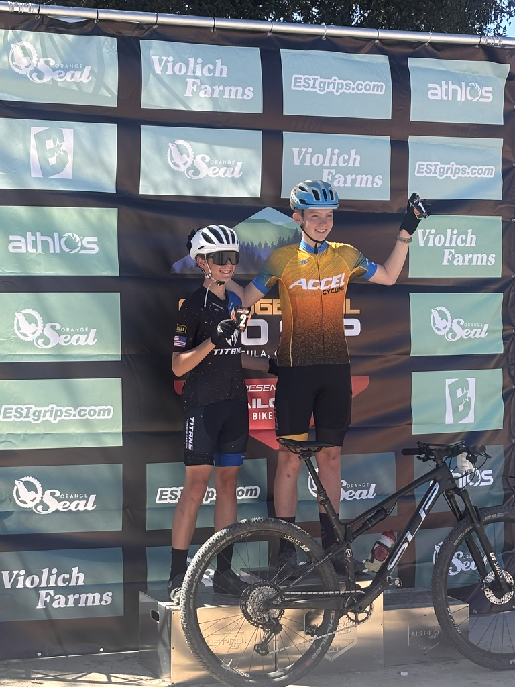
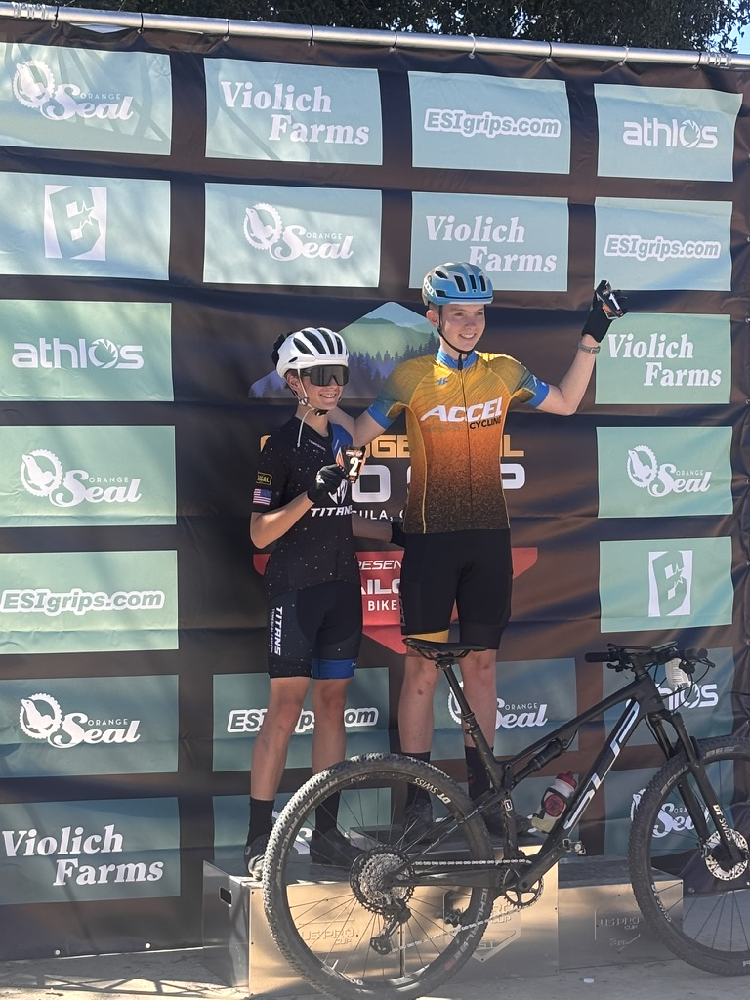

I love to ride my bike
  



As of last august, i've ridden three thousand miles this year. I had been training 6 days a week for most of the year so that I could perform at the highest level possible. I woke up at 5:30 almost everymorning last summer to beat the heat. I've competed at more than 10 races accross the western united states this year, placing well at many. The work I have put into biking this year is (in my opinion) they greatest part of my life to date, but it also lead to the worst part of my life...
On August 4th, I was riding with a good friend in Salt lake when I clipped a tree with me handlebars, got ejected from the bike, and slammed incredibly hard into another tree. I ended up with a femur nearly cracked in half, 7 fractures across the lower 5 vertabrae in my back, and a bonus fracture on my pelvis. Thanks to my friends help (usually I ride alone so that was lucky), I made my way to an ER and then Salt Lake's primary childrens hospital. I spent five nights practically bed ridden there. I took lots of morphine, had a 6 hour surgery on my hip, and mentally prepared myself for the times to come. I spent the next 10 weeks without putting any weight on my right leg, and only last week got my back restrictions cleared. I plan to go on some casual bike rides soon, but it will be a few more months before doc clears me go all in again, but I definetly will when that day comes. There is small chance the blood vessel in my femur is severed, so we have to be super careful about that. The effects of that would be catastrophic for the rest of my life. anyways though, now that I have not been biking I have been enjoying video games like Helldivers 2 and Battliefield 6, and I also have put a couple of apps in the IOS app store. fun stuff.